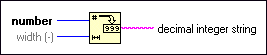

Number To Decimal String Function
Owning Palette: String/Number Conversion Functions
Requires: Base Development System
Converts number to a string of decimal digits at least width characters wide or wider if necessary. If number is floating-point or fixed-point, it is rounded to a 64-bit integer before conversion.
The connector pane displays the default data types for this polymorphic function.

 Add to the block diagram Add to the block diagram |
 Find on the palette Find on the palette |